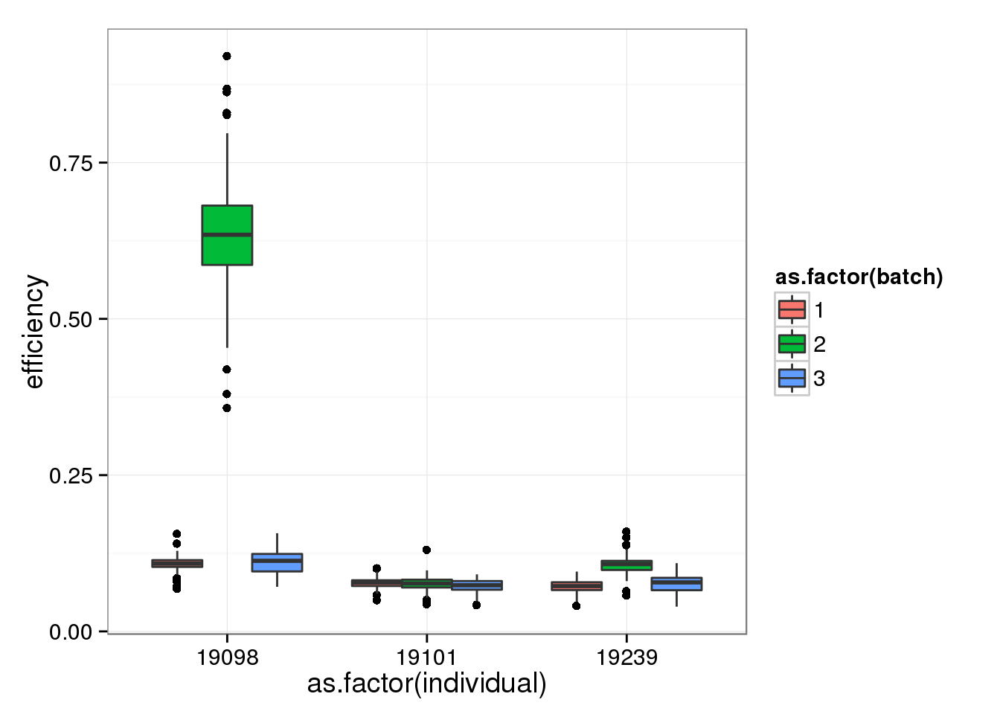
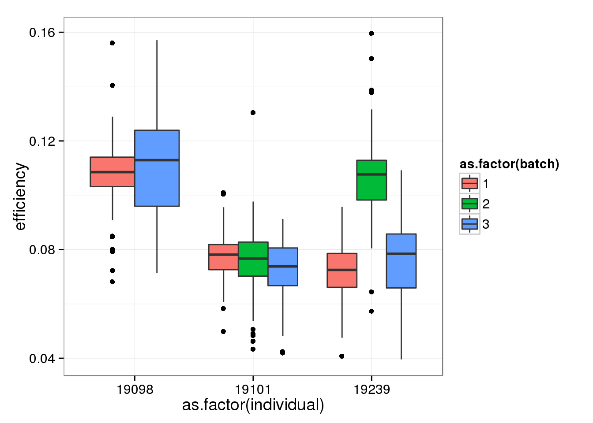
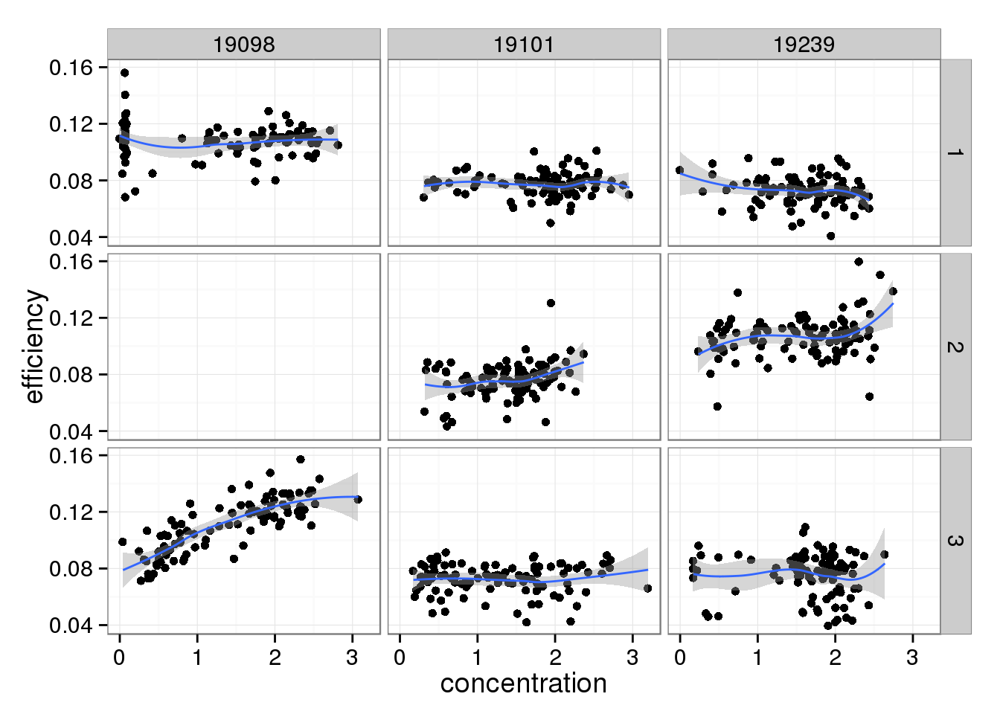
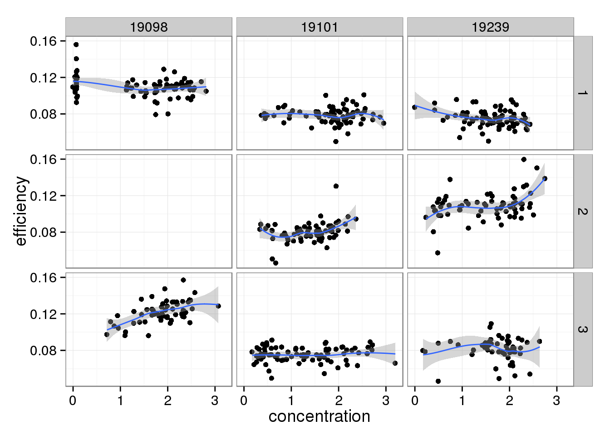
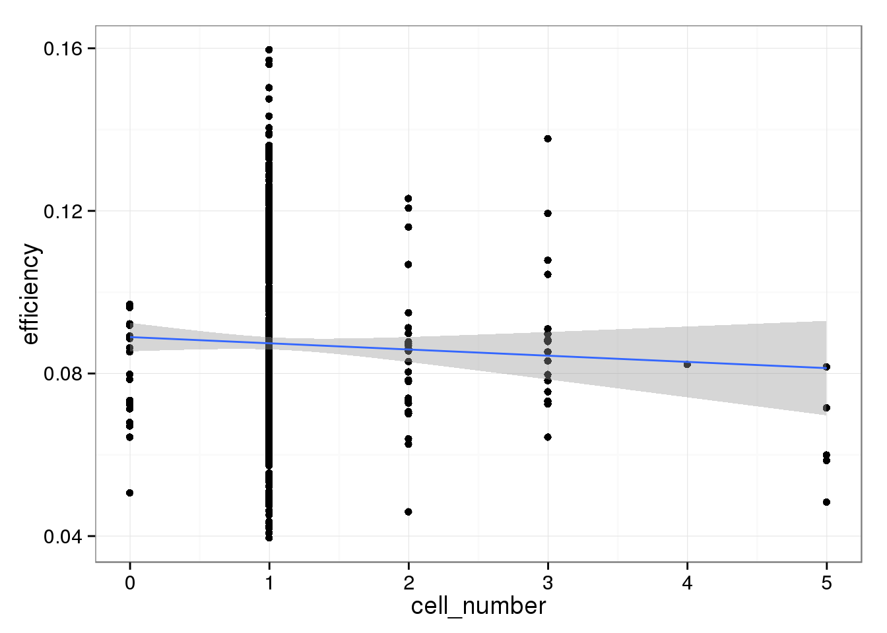
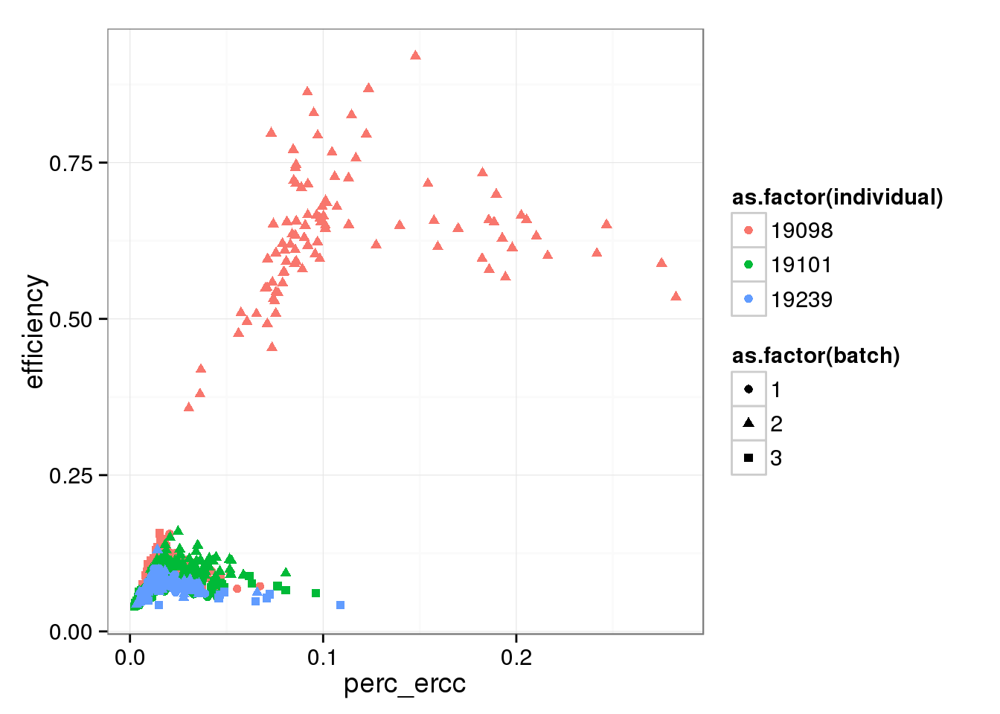
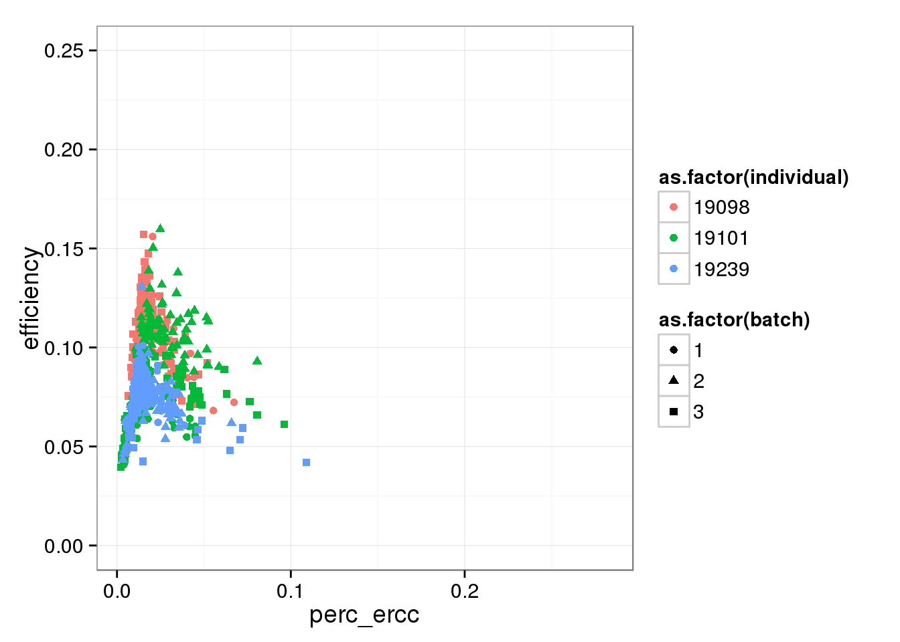
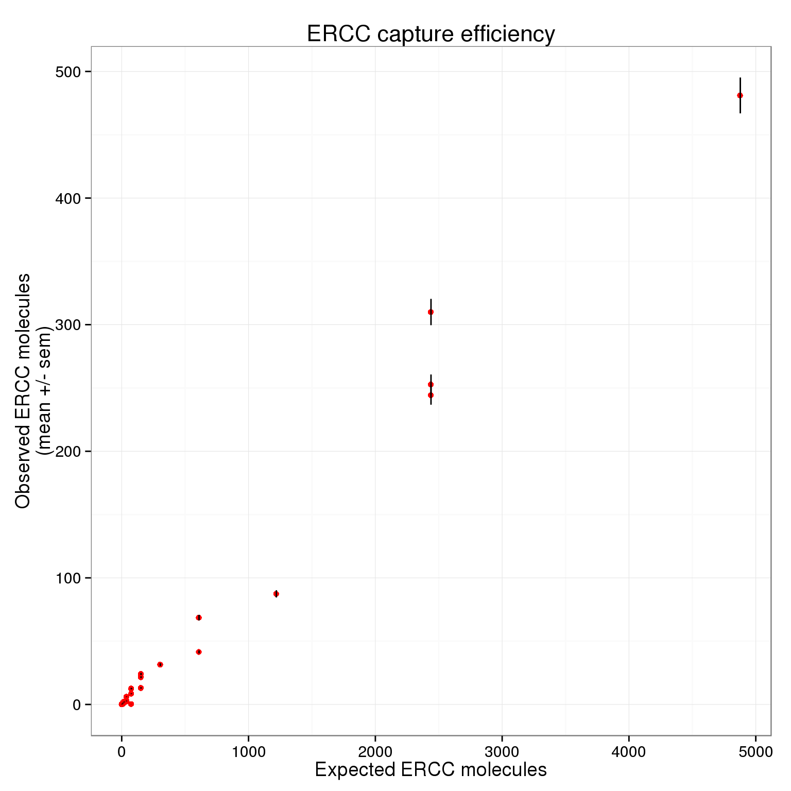
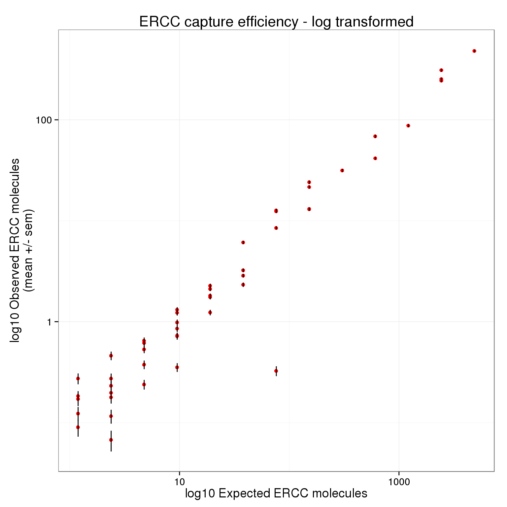

Capture efficiency
2015-08-10
Last updated: 2015-08-11
Code version: 54b5090efa940ffc9920fdee95e8364552464e2b
Here capture efficiency is defined as the fraction of the added ERCC spike-in molecules that were sequenced.
Input
Input annotation.
anno <- read.table("../data/annotation.txt", header = TRUE,
stringsAsFactors = FALSE)
head(anno) individual batch well sample_id
1 19098 1 A01 NA19098.1.A01
2 19098 1 A02 NA19098.1.A02
3 19098 1 A03 NA19098.1.A03
4 19098 1 A04 NA19098.1.A04
5 19098 1 A05 NA19098.1.A05
6 19098 1 A06 NA19098.1.A06Input ERCC concentration information.
ercc <- read.table("../data/ercc-info.txt", header = TRUE, sep = "\t",
stringsAsFactors = FALSE)
colnames(ercc) <- c("num", "id", "subgroup", "conc_mix1", "conc_mix2",
"expected_fc", "log2_mix1_mix2")
head(ercc) num id subgroup conc_mix1 conc_mix2 expected_fc log2_mix1_mix2
1 1 ERCC-00130 A 30000.000 7500.00000 4 2
2 2 ERCC-00004 A 7500.000 1875.00000 4 2
3 3 ERCC-00136 A 1875.000 468.75000 4 2
4 4 ERCC-00108 A 937.500 234.37500 4 2
5 5 ERCC-00116 A 468.750 117.18750 4 2
6 6 ERCC-00092 A 234.375 58.59375 4 2stopifnot(nrow(ercc) == 92)Input molecule counts.
molecules <- read.table("../data/molecules.txt", header = TRUE,
stringsAsFactors = FALSE)Input list of quality single cells.
quality_single_cells <- scan("../data/quality-single-cells.txt",
what = "character")Input quality control data.
qc <- read.table("../data/qc-ipsc.txt", header = TRUE, stringsAsFactors = FALSE)
stopifnot(nrow(qc) == sum(anno$well != "bulk"))Prepare single cell molecule data
Remove bulk samples.
molecules_single <- molecules[, anno$well != "bulk"]
anno_single <- anno[anno$well != "bulk", ]Remove genes with zero read counts in the single cells.
expressed_single <- rowSums(molecules_single) > 0
molecules_single <- molecules_single[expressed_single, ]
dim(molecules_single)[1] 17771 864How many genes have greater than or equal to 1,024 molecules in at least one of the cells?
overexpressed_genes <- rownames(molecules_single)[apply(molecules_single, 1,
function(x) any(x >= 1024))]23 have greater than or equal to 1,024 molecules.
Calculate number of ERCC molecules added to each well
Invitrogen provides the concentration of each ERCC spike-in in attomoles per uL.
summary(ercc$conc_mix1) Min. 1st Qu. Median Mean 3rd Qu. Max.
0.014 0.801 7.324 1125.000 117.200 30000.000 PoYuan diluted mix 1 1:2500. Then she combined 1 uL of this 1:2500 diluted mix with 19 uL of other stuff to create 20 uL of lysis buffer. She added 9 uL of lysis buffer to the C1 chip. Each well received 13.5 uL of lysis buffer.
How many molecules do we expect each sample to contain?
# Dilute 1:2500
ercc_conc_diluted <- ercc$conc_mix1 / 2500
# Dilute 1:20
ercc_conc_lysis <- ercc_conc_diluted / 20
ercc_molecules_lysis <- ercc_conc_lysis *
20 * # Number of uL of lysis buffer
1/10^18 * # Number of attomoles in a mole
6.02214179e23 # Number of molecules in a mole
# 9 uL added to chip
ercc_molecules_chip <- ercc_molecules_lysis * 9 / 20
summary(ercc_molecules_chip) Min. 1st Qu. Median Mean 3rd Qu. Max.
2 87 794 122000 12700 3252000 # 13.5 uL per well
ercc_molecules_well <- ercc_molecules_lysis * 13.5e-3 / 20
summary(ercc_molecules_well) Min. 1st Qu. Median Mean 3rd Qu. Max.
0.002 0.130 1.191 182.900 19.050 4878.000 sum(ercc_molecules_well)[1] 16831.32sum(ercc_molecules_well >= 1)[1] 50sum(ercc_molecules_well > 1024)[1] 5sum(ercc_molecules_well %% 2 == 0)[1] 0Pollen et al. calculated that they had 28,000 molecules per sample. Thus our estimate of 16831.3 seems reasonable, especially since we diluted our samples more.
Save the expected number of molecules per well.
write.table(data.frame(id = ercc$id, conc_mix1 = ercc$conc_mix1, ercc_molecules_well),
"../data/expected-ercc-molecules.txt", sep = "\t", quote = FALSE,
row.names = FALSE)ercc_index <- grep("ERCC", rownames(molecules_single))
length(ercc_index)[1] 8484 of the ERCC spike-ins had at least one molecule observed in at least one of the 864 single cells.
Capture efficiency
The “capture efficiency” is defined differently across studies. Some use it to report the number of wells that had exactly one viable cell out of the possible 96 on a C1 chip. Others use it to report how many of the added ERCC spike-in molecules were successfully sequenced. We are using the latter definition. Thus after calculating the total number of expected ERCC molecules, I simply add up all the ERCC molecules observed for a given single cell and divide it by this total.
efficiency <- numeric(length = ncol(molecules_single))
total_ercc_molecules <- sum(ercc_molecules_well)
for (i in 1:ncol(molecules_single)) {
efficiency[i] <- sum(molecules_single[ercc_index, i]) / total_ercc_molecules
}
summary(efficiency) Min. 1st Qu. Median Mean 3rd Qu. Max.
0.03957 0.07439 0.08558 0.14830 0.11130 0.92040 Factors affecting capture efficiency
qc$efficiency <- efficiency
qc$quality <- anno_single$sample_id %in% quality_single_cellsSingle cells from batch 2 of individual 19098 ahve the highest efficiency. This was expected since they have an abnormally high ERCC ratio.
efficiency_box <- ggplot(qc, aes(y = efficiency, x = as.factor(individual), fill = as.factor(batch))) +
geom_boxplot()
efficiency_box
Removing batch 2 of individual 19098.
qc_sub <- qc[!(anno_single$individual == 19098 & anno_single$batch == 2), ]efficiency_box %+% qc_sub
There doesn’t seem to be a relationship between Bioanalyzer concentration and capture efficiency.
efficiency_conc <- ggplot(qc_sub, aes(x = concentration, y = efficiency)) +
geom_point() +
facet_grid(batch ~ individual) +
geom_smooth()
efficiency_conc
And this does change when limiting to high quality cells.
efficiency_conc %+% qc_sub[qc_sub$quality, ]
The capture efficiency decreases with increasing cell number. This is expected because the more RNA that is present in a well, the ERCC spike-ins are a lower percentage of the total. However, this effect is not striking.
efficiency_cells <- ggplot(qc_sub, aes(x = cell_number, y = efficiency)) +
geom_point() +
geom_smooth(method = "lm")
efficiency_cells
Comparing capture efficiency with the percent of total molecules that are ERCC.
perc_ercc <- colSums(molecules_single[grep("ERCC",
rownames(molecules_single)), ]) /
colSums(molecules_single)
perc_ercc_data <- cbind(perc_ercc, efficiency, anno[anno$well != "bulk", ])As expected, there is a relationship between the percent of molecules that are ERCC and the capture efficiency. Also, it appears this is another technical difference between the individuals.
perc_ercc_plot <- ggplot(perc_ercc_data, aes(x = perc_ercc, y = efficiency,
col = as.factor(individual),
shape = as.factor(batch))) +
geom_point()
perc_ercc_plot
Focusing on the lower part of the distribution, which ignores the outlier batch 2 of individual 19098.
perc_ercc_plot + ylim(0, 0.25)Warning in loop_apply(n, do.ply): Removed 96 rows containing missing values
(geom_point).
Visualizing capture efficiency
Creating a visualization similar to Figure 2I in Islam et al..
First filter to only keep quality single cells.
molecules_single <- molecules_single[, colnames(molecules_single) %in% quality_single_cells]
anno_single <- anno_single[anno_single$sample_id %in% quality_single_cells, ]
stopifnot(ncol(molecules_single) == nrow(anno_single),
colnames(molecules_single) == anno_single$sample_id)Also remove batch 2 of individual 19098.
molecules_single <- molecules_single[, !(anno_single$individual == 19098 & anno_single$batch == 2)]
anno_single <- anno_single[!(anno_single$individual == 19098 & anno_single$batch == 2), ]
stopifnot(ncol(molecules_single) == nrow(anno_single))Use only those 50 ERCC genes with at least 1 expected molecule per well.
ercc_list <- list()
for (spike in ercc$id[ercc_molecules_well >= 1]) {
if (spike %in% rownames(molecules_single)) {
ercc_list$id <- c(ercc_list$id, spike)
ercc_list$observed_mean <- c(ercc_list$observed_mean,
mean(as.numeric(molecules_single[spike, ])))
ercc_list$observed_sem <- c(ercc_list$observed_sem,
sd(as.numeric(molecules_single[spike, ])) /
sqrt(ncol(molecules_single)))
ercc_list$expected <- c(ercc_list$expected,
ercc_molecules_well[ercc$id == spike])
}
}
ercc_plot <- as.data.frame(ercc_list, stringsAsFactors = FALSE)
str(ercc_plot)'data.frame': 50 obs. of 4 variables:
$ id : chr "ERCC-00130" "ERCC-00004" "ERCC-00136" "ERCC-00108" ...
$ observed_mean: num 481.073 87.391 31.49 21.566 0.325 ...
$ observed_sem : num 14.1687 2.8826 1.1007 0.7198 0.0367 ...
$ expected : num 4877.9 1219.5 304.9 152.4 76.2 ...p_efficiency <- ggplot(ercc_plot, aes(x = expected, y = observed_mean)) +
geom_point(col = "red") +
geom_errorbar(aes(ymin = observed_mean - observed_sem,
ymax = observed_mean + observed_sem), width = 0) +
labs(x = "Expected ERCC molecules",
y = "Observed ERCC molecules\n(mean +/- sem)",
title = "ERCC capture efficiency")
p_efficiency
There plot appears to be log-transformed (it doesn’t explicitly say this in the axes or legend).
p_efficiency + scale_x_log10() +
scale_y_log10() +
labs(x = "log10 Expected ERCC molecules",
y = "log10 Observed ERCC molecules\n(mean +/- sem)",
title = "ERCC capture efficiency - log transformed")
Here is their result:

Session information
sessionInfo()R version 3.2.0 (2015-04-16)
Platform: x86_64-unknown-linux-gnu (64-bit)
locale:
[1] LC_CTYPE=en_US.UTF-8 LC_NUMERIC=C
[3] LC_TIME=en_US.UTF-8 LC_COLLATE=en_US.UTF-8
[5] LC_MONETARY=en_US.UTF-8 LC_MESSAGES=en_US.UTF-8
[7] LC_PAPER=en_US.UTF-8 LC_NAME=C
[9] LC_ADDRESS=C LC_TELEPHONE=C
[11] LC_MEASUREMENT=en_US.UTF-8 LC_IDENTIFICATION=C
attached base packages:
[1] stats graphics grDevices utils datasets methods base
other attached packages:
[1] ggplot2_1.0.1 edgeR_3.10.2 limma_3.24.9 knitr_1.10.5
loaded via a namespace (and not attached):
[1] Rcpp_0.11.6 digest_0.6.8 MASS_7.3-40 grid_3.2.0
[5] plyr_1.8.2 gtable_0.1.2 formatR_1.2 magrittr_1.5
[9] scales_0.2.4 evaluate_0.7 stringi_0.4-1 reshape2_1.4.1
[13] rmarkdown_0.6.1 labeling_0.3 proto_0.3-10 tools_3.2.0
[17] stringr_1.0.0 munsell_0.4.2 yaml_2.1.13 colorspace_1.2-6
[21] htmltools_0.2.6